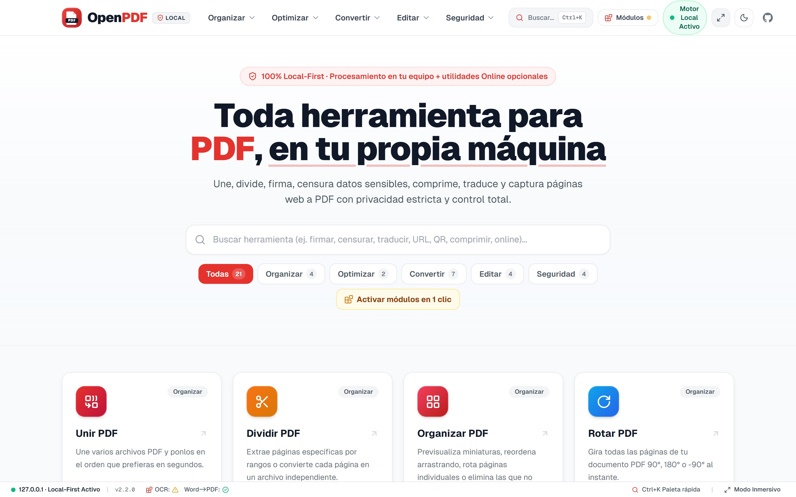

Suite de escritorio para Windows que une, divide, organiza páginas, firma, censura información confidencial, comprime y convierte documentos usando un motor nativo en C++ y Python sin depender de servidores externos.

Mueve el cursor sobre la ventana para inclinar la cámara en 3D o pulsa "Desplegar Capas Z" para inspeccionar el chasis interno.
Instalación desatendida con 1 clic mediante winget junto con la descarga automática del paquete de idioma Español (spa.traineddata), autodetección profunda en el Registro de Windows y selector gráfico nativo de ejecutables .exe sin necesidad de configurar variables de entorno PATH.
Conversión local de documentos .doc y .docx compatible tanto con Microsoft Word (WINWORD.EXE vía automatización COM nativa) como con LibreOffice (soffice.exe en modo headless).
Apertura en ventana de aplicación dedicada (--app), Modo Inmersivo a pantalla completa (F11), Paleta de Comandos instantánea (Ctrl+K), barra de estado de telemetría local y sistema iconográfico vectorial SVG unificado de alta densidad (icono HD de 256px supersampled desde 1024px).
A diferencia de los visores básicos que solo superponen capas visuales, OpenPDF opera directamente sobre el árbol de objetos binarios del documento. Selecciona una operación para observar cómo actúa sobre las capas del archivo:
Haz clic o pasa el cursor sobre cada nivel de la pila isométrica 3D para examinar cómo se comunican la interfaz estática, el servidor local y el núcleo binario de procesamiento.
Se abre en ventana de aplicación dedicada (--app) e incorpora Modo Inmersivo a pantalla completa (F11), Paleta de Comandos instantánea (Ctrl+K), panel de Ajustes con comprobación de actualizaciones en tiempo real y centro de opiniones, barra de estado de telemetría local y sistema iconográfico vectorial SVG unificado (icono HD de 256px supersampled desde 1024px) 100% offline.
Valida las firmas binarias en el primer bloque antes de procesar el archivo, mantiene estable el uso de memoria RAM y borra cualquier archivo temporal en cuanto concluye la petición. Al arrancar, selecciona automáticamente un puerto libre entre el 8000 y el 8010.
Autodetecta motores opcionales en el Registro de Windows, permite vincular ejecutables .exe mediante un selector gráfico nativo sin configurar PATH e instala Tesseract OCR (con spa.traineddata) o LibreOffice en 1 clic vía winget. Soporta conversión Word a PDF tanto con Microsoft Word (WINWORD.EXE vía COM) como con LibreOffice (soffice.exe).